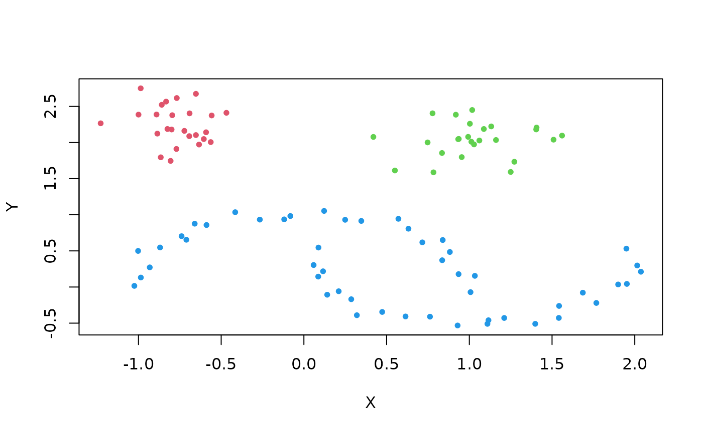
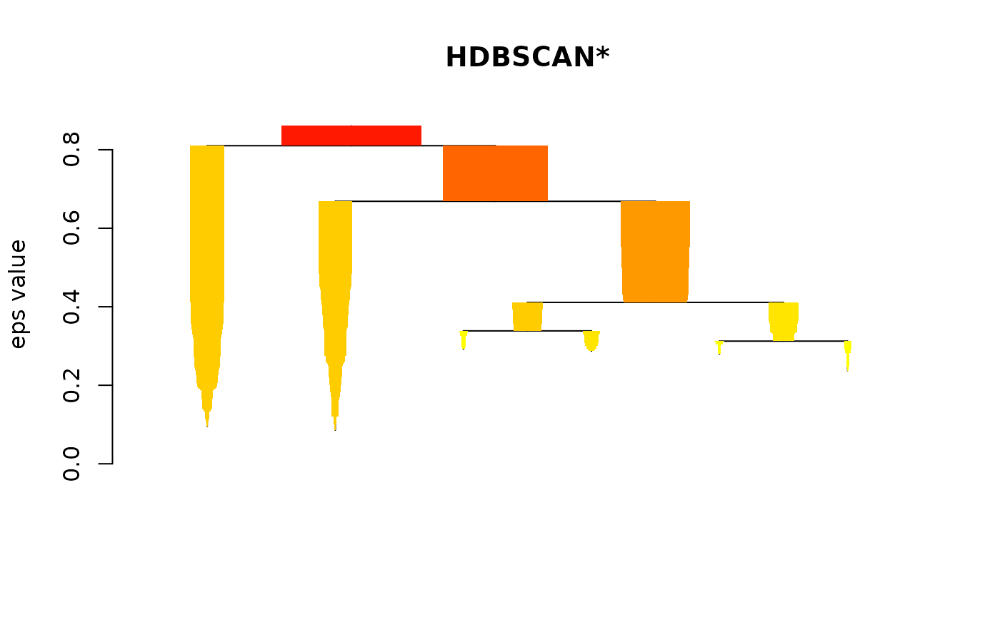
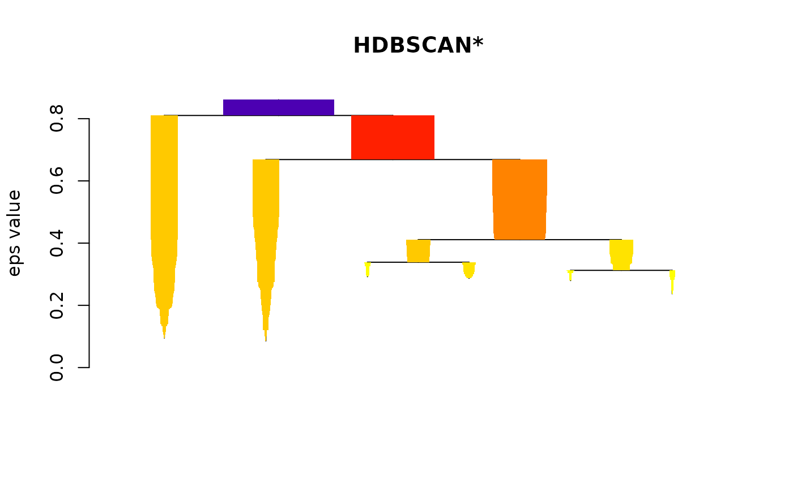
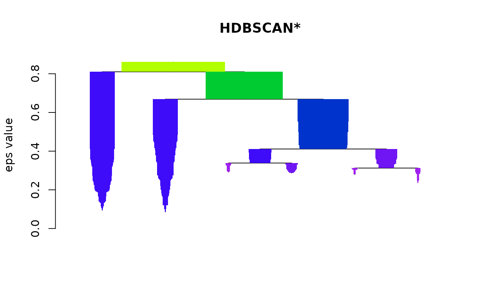
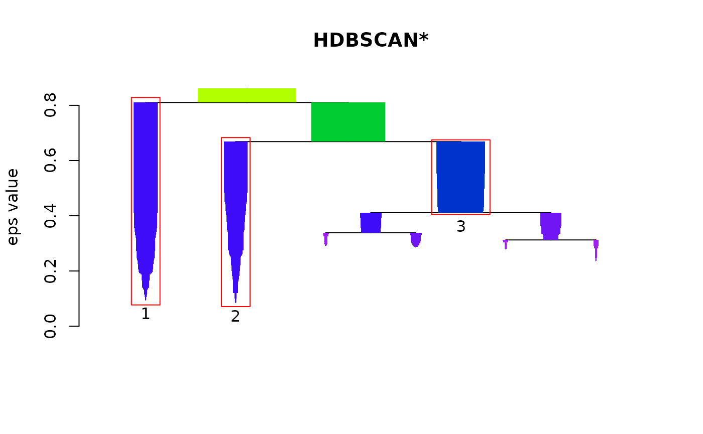
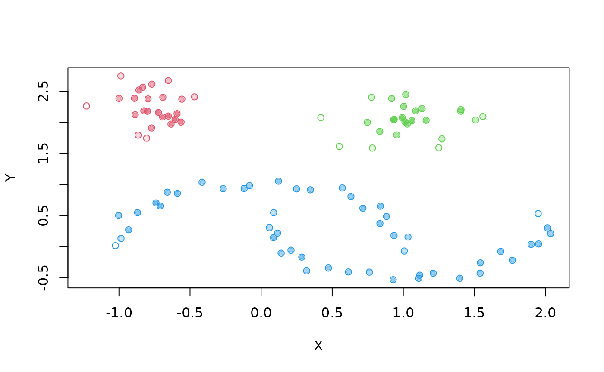
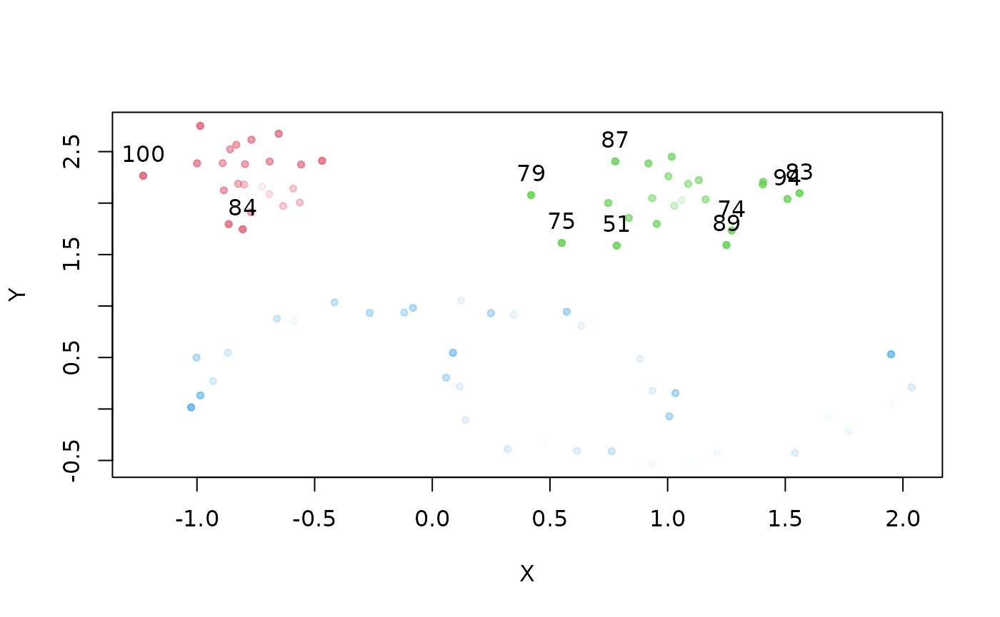
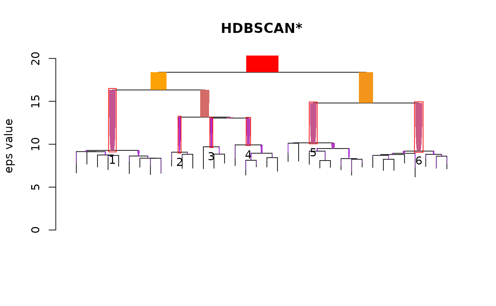

HDBSCAN with the dbscan package
Matt Piekenbrock, Michael Hahsler
Source:vignettes/hdbscan.Rmd
hdbscan.RmdThe dbscan package [6] includes a fast implementation of Hierarchical DBSCAN (HDBSCAN) and its related algorithm(s) for the R platform. This vignette introduces how to interface with these features. To understand how HDBSCAN works, we refer to an excellent Python Notebook resource that goes over the basic concepts of the algorithm (see the SciKit-learn docs). For the sake of simplicity, consider the same sample dataset from the notebook:
##
## Attaching package: 'dbscan'## The following object is masked from 'package:stats':
##
## as.dendrogramTo run the HDBSCAN algorithm, simply pass the dataset and the (single) parameter value ‘minPts’ to the hdbscan function.
cl <- hdbscan(moons, minPts = 5)
cl## HDBSCAN clustering for 100 objects.
## Parameters: minPts = 5
## The clustering contains 3 cluster(s) and 0 noise points.
##
## 1 2 3
## 25 25 50
##
## Available fields: cluster, minPts, coredist, cluster_scores,
## membership_prob, outlier_scores, hcThe ‘flat’ results are stored in the ‘cluster’ member. Noise points are given a value of 0, so increment by 1.
plot(moons, col=cl$cluster+1, pch=20)
The results match intuitive notions of what ‘similar’ clusters may look like when they manifest in arbitrary shapes.
Hierarchical DBSCAN
The resulting HDBSCAN object contains a hierarchical representation of every possible DBSCAN* clustering. This hierarchical representation is compactly stored in the familiar ‘hc’ member of the resulting HDBSCAN object, in the same format of traditional hierarchical clustering objects formed using the ‘hclust’ method from the stats package.
cl$hc##
## Call:
## hdbscan(x = moons, minPts = 5)
##
## Cluster method : robust single
## Distance : mutual reachability
## Number of objects: 100Note that although this object is available for use with any of the methods that work with ‘hclust’ objects, the distance method HDBSCAN uses (mutual reachability distance, see [2]) is not an available method of the hclust function. This hierarchy, denoted the “HDBSCAN* hierarchy” in [3], can be visualized using the built-in plotting method from the stats package
plot(cl$hc, main="HDBSCAN* Hierarchy")DBSCAN* vs cutting the HDBSCAN* tree
As the name implies, the fascinating thing about the HDBSCAN* hierarchy is that any global ‘cut’ is equivalent to running DBSCAN* (DBSCAN w/o border points) at the tree’s cutting threshold (assuming the same parameter setting was used). But can this be verified manually? Using a modified function to distinguish noise using core distance as 0 (since the stats cutree method does not assign singletons with 0), the results can be shown to be identical.
cl <- hdbscan(moons, minPts = 5)
check <- rep(FALSE, nrow(moons)-1)
core_dist <- kNNdist(moons, k=5-1)
## cutree doesn't distinguish noise as 0, so we make a new method to do it manually
cut_tree <- function(hcl, eps, core_dist){
cuts <- unname(cutree(hcl, h=eps))
cuts[which(core_dist > eps)] <- 0 # Use core distance to distinguish noise
cuts
}
eps_values <- sort(cl$hc$height, decreasing = TRUE)+.Machine$double.eps ## Machine eps for consistency between cuts
for (i in 1:length(eps_values)) {
cut_cl <- cut_tree(cl$hc, eps_values[i], core_dist)
dbscan_cl <- dbscan(moons, eps = eps_values[i], minPts = 5, borderPoints = FALSE) # DBSCAN* doesn't include border points
## Use run length encoding as an ID-independent way to check ordering
check[i] <- (all.equal(rle(cut_cl)$lengths, rle(dbscan_cl$cluster)$lengths) == "TRUE")
}
print(all(check == TRUE))## [1] TRUESimplified Tree
The HDBSCAN* hierarchy is useful, but for larger datasets it can become overly cumbersome since every data point is represented as a leaf somewhere in the hierarchy. The hdbscan object comes with a powerful visualization tool that plots the ‘simplified’ hierarchy(see [2] for more details), which shows cluster-wide changes over an infinite number of thresholds. It is the default visualization dispatched by the ‘plot’ method
plot(cl)
You can change up colors

… and scale the widths for individual devices appropriately

… even outline the most ‘stable’ clusters reported in the flat solution

Cluster Stability Scores
Note the stability scores correspond to the labels on the condensed tree, but the cluster assignments in the cluster member element do not correspond to the labels in the condensed tree. Also, note that these scores represent the stability scores before the traversal up the tree that updates the scores based on the children.
print(cl$cluster_scores)## 1 2 3
## 110.70613 90.86559 45.62762The individual point membership ‘probabilities’ are in the probabilities member element
head(cl$membership_prob)## [1] 0.4354753 0.2893287 0.4778663 0.4035933 0.4574012 0.4904582These can be used to show the ‘degree of cluster membership’ by, for example, plotting points with transparencies that correspond to their membership degrees.
plot(moons, col=cl$cluster+1, pch=21)
colors <- mapply(function(col, i) adjustcolor(col, alpha.f = cl$membership_prob[i]),
palette()[cl$cluster+1], seq_along(cl$cluster))
points(moons, col=colors, pch=20)
Global-Local Outlier Score from Hierarchies
A recent journal publication on HDBSCAN comes with a new outlier measure that computes an outlier score of each point in the data based on local and global properties of the hierarchy, defined as the Global-Local Outlier Score from Hierarchies (GLOSH)[4]. An example of this is shown below, where unlike the membership probabilities, the opacity of point represents the amount of “outlierness” the point represents. Traditionally, outliers are generally considered to be observations that deviate from the expected value of their presumed underlying distribution, where the measure of deviation that is considered significant is determined by some statistical threshold value.
Note: Because of the distinction made that noise points, points that are not assigned to any clusters, should be considered in the definition of an outlier, the outlier scores computed are not just the inversely-proportional scores to the membership probabilities.
top_outliers <- order(cl$outlier_scores, decreasing = TRUE)[1:10]
colors <- mapply(function(col, i) adjustcolor(col, alpha.f = cl$outlier_scores[i]),
palette()[cl$cluster+1], seq_along(cl$cluster))
plot(moons, col=colors, pch=20)
text(moons[top_outliers, ], labels = top_outliers, pos=3)
A Larger Clustering Example
A larger example dataset may be more beneficial in explicitly revealing the usefulness of HDSBCAN. Consider the ‘DS3’ dataset originally published as part of a benchmark test dataset for the Chameleon clustering algorithm [5]. It’s clear that the shapes in this dataset can be distinguished sufficiently well by a human, however, it is well known that many clustering algorithms fail to capture the intuitive structure.
Using the single parameter setting of, say, 25, HDBSCAN finds 6 clusters
cl2 <- hdbscan(DS3, minPts = 25)
cl2## HDBSCAN clustering for 8000 objects.
## Parameters: minPts = 25
## The clustering contains 6 cluster(s) and 814 noise points.
##
## 0 1 2 3 4 5 6
## 814 1585 618 614 924 1656 1789
##
## Available fields: cluster, minPts, coredist, cluster_scores,
## membership_prob, outlier_scores, hcMarking the noise appropriately and highlighting points based on their ‘membership probabilities’ as before, a visualization of the cluster structure can be easily crafted.
plot(DS3, col=cl2$cluster+1,
pch=ifelse(cl2$cluster == 0, 8, 1), # Mark noise as star
cex=ifelse(cl2$cluster == 0, 0.5, 0.75), # Decrease size of noise
xlab=NA, ylab=NA)
colors <- sapply(1:length(cl2$cluster),
function(i) adjustcolor(palette()[(cl2$cluster+1)[i]], alpha.f = cl2$membership_prob[i]))
points(DS3, col=colors, pch=20)The simplified tree can be particularly useful for larger datasets

Performance
All of the computational and memory intensive tasks required by HDSBCAN were written in C++ using the Rcpp package. With DBSCAN, the performance depends on the parameter settings, primarily on the radius at which points are considered as candidates for clustering (‘eps’), and generally less so on the ‘minPts’ parameter. Intuitively, larger values of eps increase the computation time.
One of the primary computational bottleneck with using HDBSCAN is the computation of the full (euclidean) pairwise distance between all points, for which HDBSCAN currently relies on base R ‘dist’ method for. If a precomputed one is available, the running time of HDBSCAN can be moderately reduced.
References
- Martin Ester, Hans-Peter Kriegel, Joerg Sander, Xiaowei Xu (1996). A Density-Based Algorithm for Discovering Clusters in Large Spatial Databases with Noise. Institute for Computer Science, University of Munich. Proceedings of 2nd International Conference on Knowledge Discovery and Data Mining (KDD-96).
- Campello, Ricardo JGB, Davoud Moulavi, Arthur Zimek, and Jörg Sander. “A framework for semi-supervised and unsupervised optimal extraction of clusters from hierarchies.” Data Mining and Knowledge Discovery 27, no. 3 (2013): 344-371.
- Campello, Ricardo JGB, Davoud Moulavi, and Joerg Sander. “Density-based clustering based on hierarchical density estimates.” In Pacific-Asia Conference on Knowledge Discovery and Data Mining, pp. 160-172. Springer Berlin Heidelberg, 2013.
- Campello, Ricardo JGB, Davoud Moulavi, Arthur Zimek, and Jörg Sander. “Hierarchical density estimates for data clustering, visualization, and outlier detection.” ACM Transactions on Knowledge Discovery from Data (TKDD) 10, no. 1 (2015): 5.
- Karypis, George, Eui-Hong Han, and Vipin Kumar. “Chameleon: Hierarchical clustering using dynamic modeling.” Computer 32, no. 8 (1999): 68-75.
- Hahsler M, Piekenbrock M, Doran D (2019). “dbscan: Fast Density-Based Clustering with R.” Journal of Statistical Software, 91(1), 1-30. doi: 10.18637/jss.v091.i01